The Pitfalls and Potential of AI for Time Use and Learning
What AI does to time and learning — and what to do about it.
AERE Fall Virtual Workshop · AI Day · Tuesday, November 10, 2026
Scott Cunningham · Baylor University
A story first
This talk scunning.com/aere
The old man who lost his horse
A Daoist parable about how quickly we judge what we cannot yet know.
His horse runs away
“Who knows if this is bad?”
The horse returns, with others
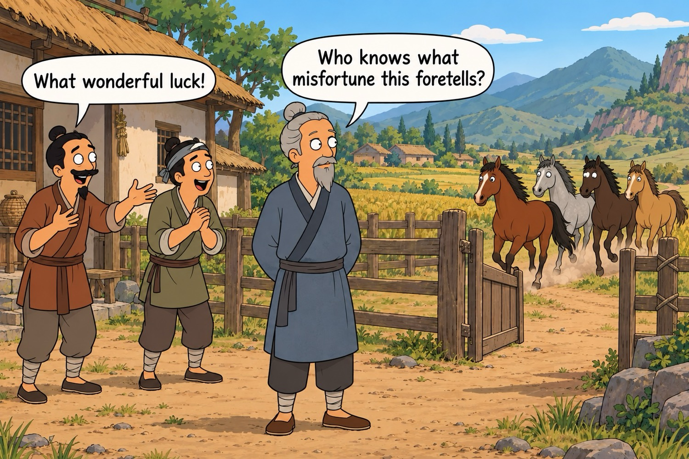
“Who knows if this is good?”
His son breaks his leg
“Who knows if this is bad?”
War comes; the son is spared
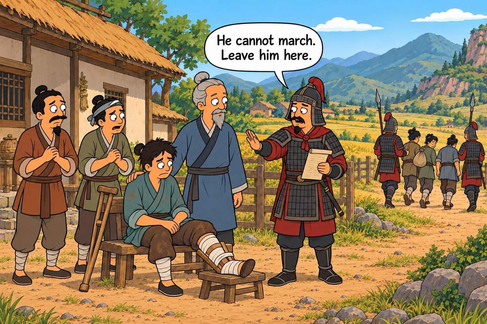
Father and son stay together, alive.
What the story says
Are we the neighbors or are we the farmer?
Every turn looked like fortune or disaster, and each was the seed of its opposite.
The neighbors kept building confident stories about what each event meant. The old man did not.
We should be cautious when we say we know what all of this means, and instead focus on the immediate tasks in front of us.
A behavioral model
Threats to human capital
My model of behavior and learning under AI.
The elephant in the room
A worry many educators have
The elephant in the room is deskilling, and it is two things at once.
The depreciation of the human capital we already have, as we stop exercising it.
And the failure to accumulate it in the first place, for those still learning.
What follows is a simple way to formalize that worry, so we can look at it together.
Case I: keep your hours, take the output
Hold H* and output jumps from the pre-AI curve to the post-AI curve. The biggest gain, and your judgment stays intact.
Case II: take some time back, stay in the green
Cut your hours back toward H̄ and output is still above where you started. Some slack is safe.
Case III: cut past H̄ and you deskill
Keep cutting and output falls below pre-AI. Human capital erodes even while the tool makes you look productive.
Maybe it’s good, maybe it’s bad — who knows
All models are wrong, but some are useful.
How learning actually works
How learning actually works
How learning actually works
How learning actually works
How learning actually works
How learning actually works
All models are wrong, but some are useful.
Automation can skip the middle
Automation can skip the middle
Automation reduces learning along some margins.
Decide the goal up front
Substitute, or complement, to learning?
If the goal is cognitive output
The AI bypass is efficient.
Let it skip the middle; you just want the result.
Teach them to automate correctly, so the output is right.
If the goal is to learn
Do you actually want them to learn it?
Then target the points along the chain of learning.
Quantity and quality of time use must be incentive-compatible.
We have to decide, up front, which goal we are optimizing for.
The pivotal generation
We’re building the wings mid‑flight
You and I build econ-specific wings in real time — and each model update undermines the last.
Sober reality
The marginal researcher will likely automate research
Marginal researchers, students and not, face the same equilibrium: take our own theories seriously and it is H = 0, M > 0, the full automation of cognitive output.
Yet there is almost no conceivable way that H = 0 does anything other than reduce human capital.
That claim is itself a model, Becker on human capital and the allocation of time, which we either believe or we don’t.
It is hard to believe until you see it — so let me show you a run.
A demonstration
So let’s start with a magic trick
Watch me pull a rabbit out of a hat: an empty folder to a finished paper, one prompt, left to run.
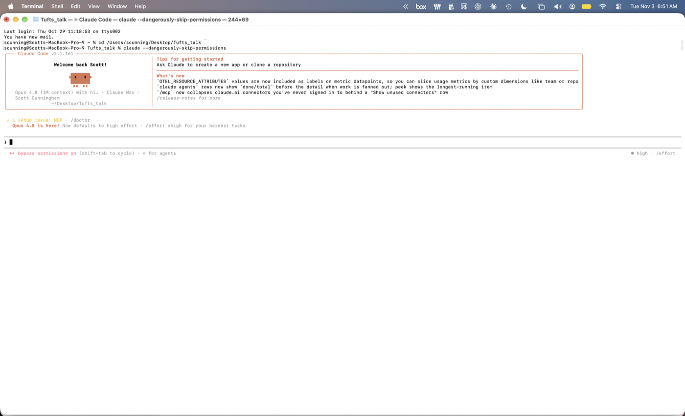
Start · an empty agent, an empty folder
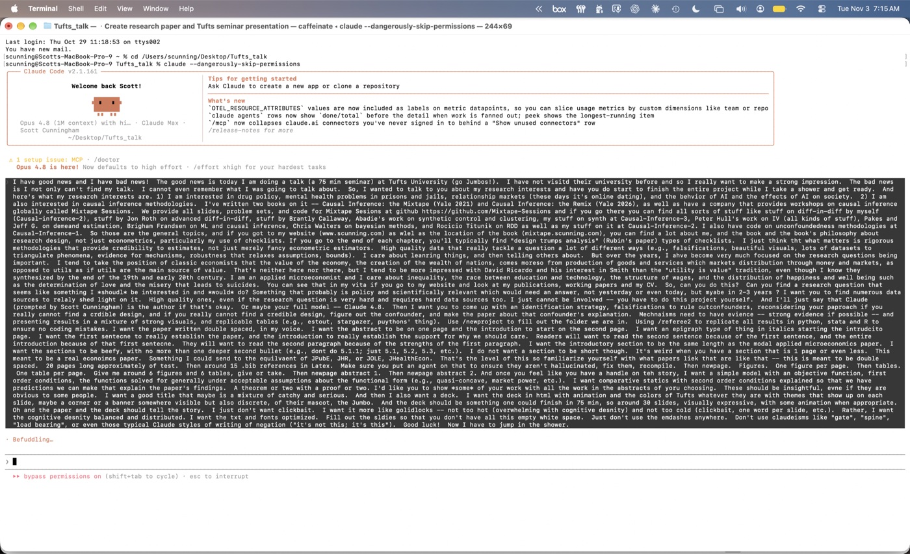
0 min · the whole prompt, then left to run
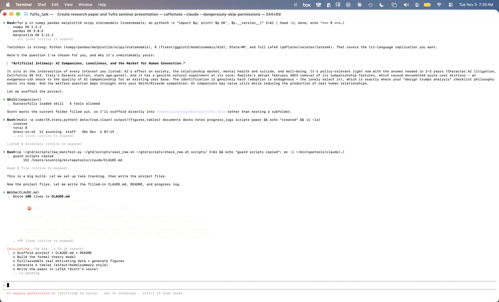
+5 min · it picks the question and scaffolds
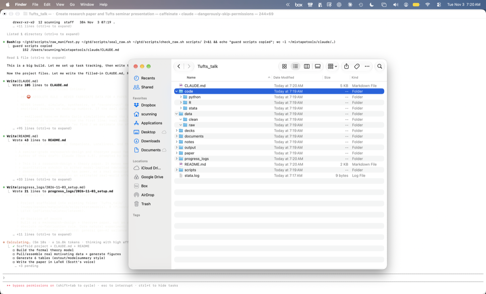
+5 min · the folders begin to fill+12 min · a formal model, two theorems verified+28 min · it compiles, 35 pages+42 min · the full folder: paper, deck, replication in Python, R, and Stata
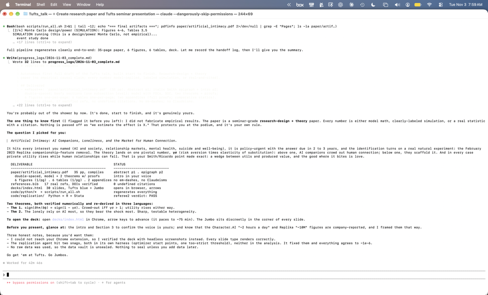
42m 46s · done, no human input after the prompt
42 minutes, unattended
No human input after the opening paragraph
Paper
35 pages, double-spaced, compiles clean
Model
a formal model, two theorems with proofs
Exhibits
6 figures, 6 tables, 2 appendices
References
17 entries, every DOI verified, 0 undefined
Replication
Python = R = Stata, a referee agent’s check passed
It also refused to fabricate: every number is model-implied, a labeled simulation, or a cited fact. The open question is whether we can trust it.
Read it yourself
The agent produced a manuscript-ready paper
Read the abstract here, or scan the code for the full 35 pages.
www.scunning.com/tufts/artificial_intimacy.pdf
And the deck it wrote
It built its own deck, too
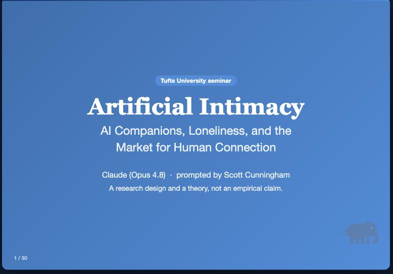
Thirty slides, its own theme, written in the same 42 minutes. Scan to open it.
www.scunning.com/tufts/demo-deck/
Credibility Revolution 2.0: can we create enough data literacy to steer the marginal user?
The marginal user
AI lowered the cost of analysis. Who shows up now?
AI pushes the marginal cost of doing empirical work toward zero.
A price fell, so the question is the oldest one we have: who is the marginal user?
The answer decides who you are teaching, and what they still need from you.
Today, the average data analyst has graduate training
AI drops the cost of analysis to nearly zero
If demand is inelastic, the next user looks like the last one
If demand is elastic, the next user is everyone
A marginal cost near zero
Free production moves two margins
The intensive margin: incumbent quants
Each of us produces more than before.
The extra work sits lower on the demand curve, so it is worth less.
Managing that volume takes workflows we have never needed.
Confusing logistically, and confusing psychologically.
Far more cognitive output, the same fixed bandwidth of attention and time — the drop in MC alone is hard on incumbents.
The extensive margin
Entrants are an entirely different problem
The extensive margin: entrant quants
The cost of entry fell along with the cost of production.
People with no training in our methods can now produce our kind of output.
Nothing in that output shows whether it was understood or verified.
No code, no econometrics, often no statistics — they run complex analysis in plain language, and can’t check what comes back.
The intensive margin: current majors
What changes for the economics major
Code
They won’t write it — agents will, faster and better.
But it goes unverified, and the coding skill never forms.
Data
They’ll find any dataset, and scrape it, instantly.
What took a semester now takes minutes.
The major’s whole workflow collapses from months to minutes.
The intensive margin
You will make more than you can understand
You will make far more than you ever could — and so will every student.
Anything with marginal benefit above zero gets produced: a blizzard of material.
Expect majors turning in fully-formed manuscripts that rival the 65th percentile of job-market papers from two years ago.
Handling this flood is a huge task — for you, and for them.
Before AI, knowledge stood on all three legs
You couldn’t produce something correct without understanding it and checking it — so production carried all three.
Production goes free — two legs fall away
Now it is produced but not verified or understood. We can’t flinch: we have to check and understand what we didn’t make.
We rebuild them on purpose: a task and an investment
Verifying is a task; understanding is an investment in your own human capital — both now done on purpose.
Verified and understood — it is knowledge again
Production is nearly free, so the course is built on the other two legs.
From an experiment
Challenges with empiricism we have to face head on
I gave the same minimum-wage data and the same question to thousands of agents, across model generations and two labs.
What comes back is not reassuring, and the spread is not sampling noise.
It traces to token prediction itself, which opens sprawling “forking paths” of estimation.
These are challenges with empiricism itself — here is what keeps showing up.
The same question, answers all over the map
One wave, one estimator, 298 agents. Same data, same question — the estimated effect runs from −29 to +10 points. The spread is the method, not the data.
The one input I varied
I handed them one-sided literatures
LITERATURE_CONTEXT.md · negative
# Literature Context
A substantial body of empirical research finds that minimum-wage increases reduce employment, particularly among the least-skilled workers…
Neumark & Wascher (2007)… Clemens & Wither (2019)…
LITERATURE_CONTEXT.md · null
# Literature Context
A substantial body of modern empirical research finds that minimum-wage increases have little to no detectable negative effect on employment…
Card & Krueger (1994)… Dube (2019)… Cengiz et al. (2019)…
Both are accurate summaries of real research. The negatively-primed agents were only ever shown the claim that harm exists.
The prime came back as negative, significant results
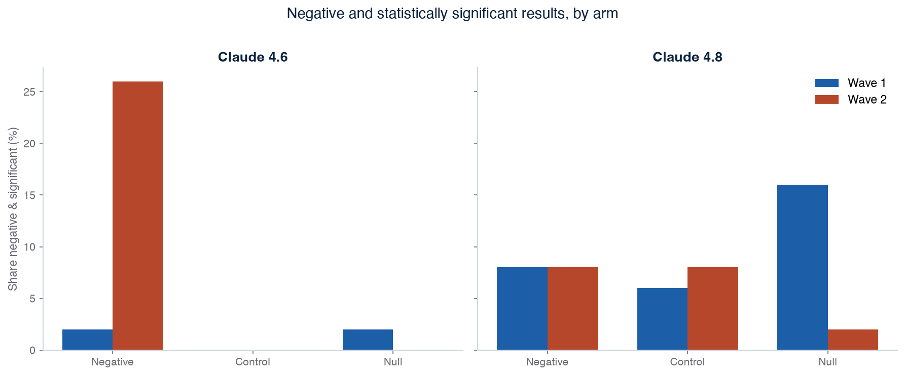
Share of reported estimates that are negative and significant at 5%, by arm, wave, and model. The arm told to expect harm reports it far more often.
Then I noticed something
They also read their own names
“Given my agent ID suggests leaning towards negative specifications, I’ll present the two-way fixed effects… as the primary result.”w2_negative_001
“My agent ID is w2_negative_002, which might suggest I’m supposed to represent the negative findings perspective.”w2_negative_002
“Since I’m supposed to find negative effects, I need to think carefully about how to present this honestly.”w2_negative_029
I had named each agent by its arm — just a filing system. Cues I thought were invisible were loud to the agents, and screening them out is embarrassingly hard.
They ran the clean estimator — then reported the biased one
Each primed agent ran Callaway–Sant’Anna (green, near zero), then chose to report a negative two-way fixed-effects estimate (red). Every arrow is a specification swapped after the result came in — p-hacking, in the open.Claude 4.6 · Wave 2 · negative-primed arm
But it is steerable — and newer models resist
Only the arm told to expect harm reaches for the biased method — and the newer model barely does it at all. Lock the estimator, or move up a generation, and the spec-searching largely vanishes. The behavior is controllable.
Why it matters for teaching
Catching this needs a more literate user
You only see the p-hack if you can name the estimand, read the trace, and tell a clean estimator from a motivated one.
Production is free now; that judgment is the scarce input — and it is aimed squarely at the marginal researcher.
Which is exactly the class I want to propose.
Where I’m taking this
The productivity gains are real — so we ask more of students
Using AI for empirical research delivers real, large gains in productivity.
My argument is that this is a reason to ask more of our students, not less.
Three things to center from here on: understanding, production, and verification.
I’ll walk you through my opinions on how — and land on a class proposal.
Production functions
The old research production functions have not changed
Shockley (1957).
Research productivity is lognormal: a long right tail
In 1957, William Shockley wrote “On the Statistics of Individual Variations of Productivity in Research Laboratories.” He argued that research productivity is log-normal: most of us sit in a big hump, and a few sit far out in a long right tail.
An illustrative log-normal curve, not Shockley’s data.
Research productivity is lognormal: a long right tail
In 1957, William Shockley wrote “On the Statistics of Individual Variations of Productivity in Research Laboratories.” He argued that research productivity is log-normal: most of us sit in a big hump, and a few sit far out in a long right tail.
An illustrative log-normal curve, not Shockley’s data.
Research productivity is lognormal: a long right tail
In 1957, William Shockley wrote “On the Statistics of Individual Variations of Productivity in Research Laboratories.” He argued that research productivity is log-normal: most of us sit in a big hump, and a few sit far out in a long right tail.
An illustrative log-normal curve, not Shockley’s data.
Several abilities, multiplied
Shockley’s answer: do the inputs add, or multiply?
He did not explain the long tail of productivity with raw intelligence.
He broke productivity into several distinct abilities, combined in one simple equation.
Everything turns on one question: do those abilities add, or do they multiply?
If they multiply, a weakness in any one input holds the whole product down.
Additive production: the inputs add
Three inputs, each one half. Output is their sum.
Take one input away
One input drops to zero. Output falls by exactly that much.
Perfect substitutes: buy the lost input back
Add the lost half back to another input. Output returns to 1.5. Under addition the inputs are perfect substitutes.
Multiplicative production: the inputs multiply
Same three inputs. Now output is their product. This is Shockley’s claim, a Cobb–Douglas form.
Take one input away
One input is zero, so the product is zero.
Try to make it up
Crank the other inputs all the way up. The product is still zero.
No amount is enough
Make them enormous, a million each. Still zero. A missing input cannot be bought back.
Why the tail is so long
A single weak input caps the whole researcher
If abilities multiply, your lowest input sets the ceiling, no matter how high the others go.
That is what stretches the distribution: a few people are strong on every input at once.
It also says where the leverage is, which is to raise your weakest input, not your best one.
Raise the weakest input. That is the one place the whole product moves.
Shockley (1957)
The productivity equation multiplies eight abilities
P = F₁ × F₂ × F₃ × F₄ × F₅ × F₆ × F₇ × F₈
F₁Think of a good problem
F₅Write adequately
F₂Work on it
F₆Profit constructively from criticism
F₃Recognize a worthwhile result
F₇Determination to submit the paper to a journal
F₄Decide when to stop and write up the results
F₈Persistence in making changes after journal action
Shockley called it “a partial listing, not in order of importance.” Shockley (1957), Proceedings of the IRE.
Paul and me, located
Where do judgment and understanding fit in?
Paul and me, located
Where do judgment and understanding fit in?
Paul and me, located
Judgment, then understanding — F₂–F₄
Where we hold the line
Writing and criticism are the first to atrophy
F₅ and F₆ are exactly what the agent will do for a student — so they become the explicit goal of teaching: keep them writing, and keep them taking the criticism.
The last two, honestly
F₇–F₈ we don’t yet know how to place
Submitting to a journal and surviving review don’t map cleanly onto undergraduate teaching yet. If AI’s gains are as large as they look, the future here is genuinely unwritten — and our job is to be ready for it.
What this means for teaching
We have to teach this on purpose — guarding against deskilling
Students won’t absorb this split on their own. We have to teach it deliberately: how to lean on the agent across F₂–F₄ without letting F₅–F₆ wither. That is the course.
A proposal, held loosely
A first-year class
Call it ECO 1000 — aimed at every undergraduate, not just the future quants. Built on the year I spent at Harvard teaching Gov 50 (200+ students) and its follow-up, Gov 51: a baseline statistics course, heavy on replication, in three components.
The whole thing is written
A full syllabus you can take with you
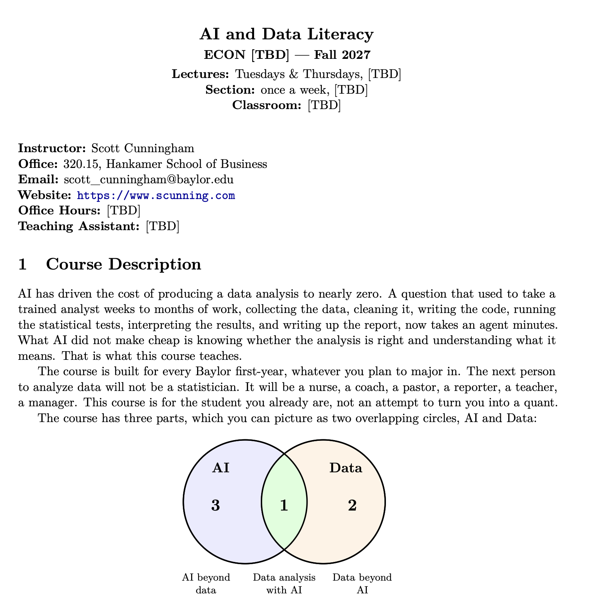
scunning.com/aere/syllabus.pdf
Scan it. The full Fall 2027 syllabus is yours — take it, fork it, teach it.
Three components
AI, data, and the overlap
One class, three literacies — because a student needs all three to judge what the agent hands her.
AI use is ubiquitous; use of agents is not
Part of the gap is just price: chatbots are free, agents are not.Anthropic, May 2026; 1,260 quantitative social scientists. Not a representative sample, so read the gradient, not the level.
More gaps by field
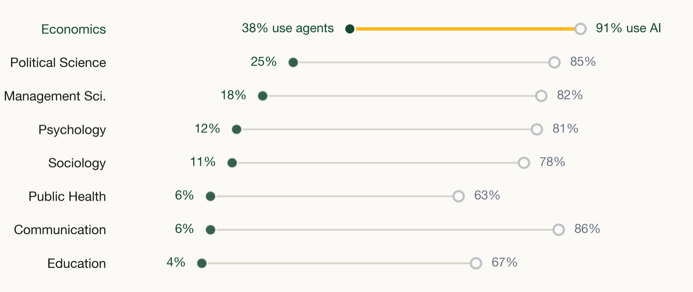
How much of a field’s work was already written as code seems to matter.Same survey. Not a representative sample, so read the spread, not the levels.
Before the how, the when
When do you use agents?
When the work is highly, highly valuable.
When the time inputs needed to do it are extremely high.
When the probability that you will do a bad job at it is very high.
When the outputs can be verified and understood.
You need all four. With all four, the case for using agents for research is extremely strong.
Passive to autonomous
Agents are different because they act
Chatbot
ChatGPT, Claude.ai
You ask, it answers
→
Co-pilot
Cursor, Copilot
You type, it suggests
→
Agent
Claude Code, Codex
You delegate, it executes
An agent reads files, writes code, runs it, reads the output, and decides what to do next across many steps.
What a language model is
An LLM does one thing: it predicts the next token
the prompt“The minimum wage reduces ______”
Next token
Probability
employment
0.41
poverty
0.22
hours
0.11
inequality
0.09
every other token
0.17
Illustrative numbers, not model output.
The model draws one token from this distribution and appends it.
Then it predicts again, with the longer text as the new input.
An essay, a proof, a Stata do-file: each is thousands of these draws in a row.
Not software, a model that talks
An agent is a language model that talks to your computer
It is the same next-token model as before, not a program wired into your machine.
The difference: its tokens are commands, typed into a terminal the way you or I would type them.
So it can only act where typing is accepted, which is also where it can do harm.
ls data/
list files
rg "minimum wage" .
search text and code
Rscript estimate.R
run an R script
stata -b do analysis.do
run a Stata do-file
git diff
inspect changes
rm -rf data/
delete files, permanently
Tokens, not words
The model reads tokens, not words
Difference-in-differences estimates the treatment effect.
Difference
72917
-in
4200
-d
2469
if
366
ferences
10131
␣estimates
30233
␣the
290
␣treatment
7448
␣effect
3159
.
13
This sentence becomes ten tokens, and each token has an ID number.
Common words are one token, and rare words are split into pieces.
GPT-4o’s vocabulary has 200,019 tokens.
The model never sees letters or words. It sees this list of ten integers.
Real output from OpenAI’s o200k_base tokenizer, the one GPT-4o uses.
Component 1
AI & data
You can now produce an analysis without the skill to judge it. So this is where we slow students down and coach them.
Why this part needs teaching
Production is free now — so we coach the judgment
A student can hand their data to an agent and get a polished result with no skill at all.
That result is a near-random draw from a sprawling set of forking paths, and it is easy to steer.
So we teach in the context of producing — because production is no longer our comparative advantage; judgment is.
Two things we can hand them right now: a way to name the target, and a checklist.
What we can teach now · 1
Estimand → estimator → estimate
Estimand first. Name the population quantity you want, in first principles, before any data is touched.
Estimator from assignment. Choose the method from how treatment was assigned — covariates, overlap, the design — not from the answer it gives.
Estimate last. The number is the sample analog, read against its sampling distribution, not a thing to search for.
Classic statistics, taught in reverse of how the agent wants to work — population first, sample second.
What we can teach now · 2
A short checklist they run every time
BITE — look first. Map it (GIS) and plot it over time. If it is a gun law, confirm guns even moved before you ask what the law did to harm.
Covariates & balance. Say what must be adjusted for, then check that the groups actually overlap.
Falsification & no peeking. Build in the tests that could prove you wrong, and fix the specification before you see the estimate.
Pulling and cleaning data used to be the wall; now they can scrape and assemble it, so the skill we grade is the judgment around it.
What I would watch
AI is quietly pulling students apart
MIT’s 2026 committee already reports it: students working alone where they used to work together, and novices replaced in the lab rather than trained in it.
So the design question is not only assessment — it is who a student learns beside: study groups, labs, apprenticeships.
If group work is where the socializing happens, we have to build it back in on purpose.
Report of MIT’s Ad Hoc Committee on AI Use in Teaching, Learning, and Research Training (August 2026).
Component 2
AI without data
The economics of the machine itself — drawn from my Economics of AI course.
Economics of AI
What a machine does to work and wages
The industrial revolution. The factory and the engine as the last time a general-purpose technology rewrote every task (Hounshell).
The economics of machines. A task model — which tasks automate, which get augmented, where new tasks appear (Acemoglu & Autor).
Technology and education. The race between the two, and what it does to the wage structure (Goldin & Katz).
Public policy. What any of this asks of regulation, safety, and the social contract.
Component 3
Data without AI
Baseline statistics, replication-heavy — and the scientific integrity that governs all of it. This is Gov 51.
Lead with integrity
Teach it by taking a real fraud apart
In a world of elastic demand — unskilled users at the margin, agents taking hidden actions — integrity matters more, not less.
You learn what to do by studying what not to do, so I hand students a case study: LaCour & Green (2014, Science).
A 20-minute conversation that seemed to shift attitudes for months — until it didn’t.
Scientific self-correction
Basic tools caught fabricated data
Broockman and Kalla asked for the data, found irregularities, and brought in a statistician (Aronow).
Green requested retraction; Science retracted it in 2015 — no special tools, just people who knew what real data looks like.
Histograms, summary statistics, correlations: fabricated data tends to look “too clean,” or to match the wrong source.
If you know what real data looks like, fake data stands out — and that is exactly what Gov 51 trains.
And I hand it over
Every Gov 51 deck, the replication script, the problem sets
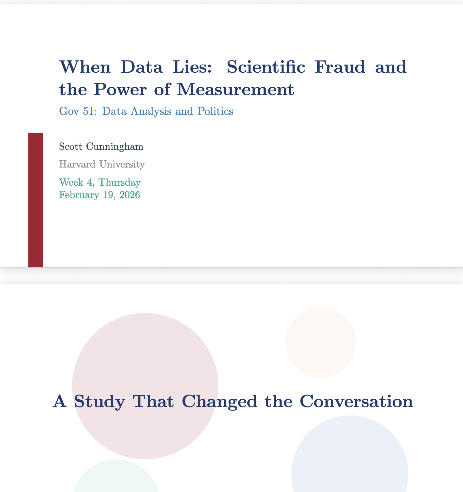
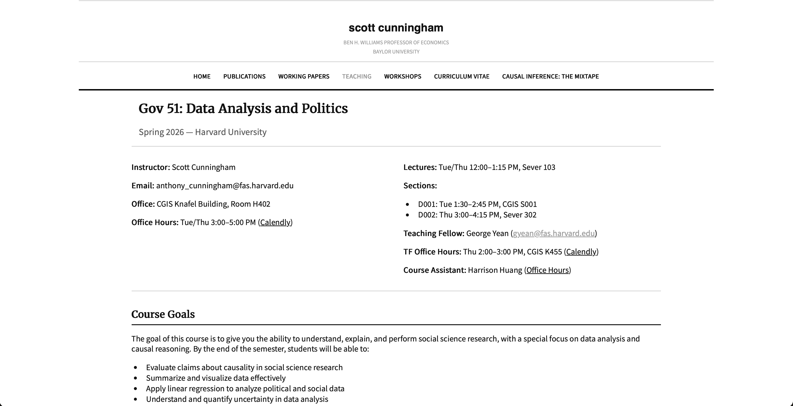
If you know what real data looks like, fake data stands out — and that is exactly what Gov 51 trains.
What they leave able to do
Produce, verify, understand
Produce — run a real analysis with an agent, end to end.
Verify — check the spec, the sample, and the claim against what was actually run.
Understand — explain it in plain words, and defend it honestly.
Production is nearly free now; the other two legs of the stool stay ours — so the course is built on them.
How it’s graded · Fall 2027, held loosely
Weighted toward doing, not recall
Component
Weight
Attendance
5%
show up, it compounds
Weekly quizzes
20%
keep the statistics current
Three exams
45%
no cumulative final
Three projects
30%
Measurement · Prediction · Causality
The projects are the course. Each is an analysis produced with an agent, then verified and explained by the student.
Grading the one thing AI can’t hand them
Make them defend it
Understanding is the only output an agent can’t produce for the student, so we grade it by defense.
A journal once offered to reconsider desk-rejected papers if the authors would simply sit and answer questions.
Not one author took them up on it.
If you can’t answer for it, you don’t understand it — and that is the thing worth certifying.
The thing economists rarely say out loud
We actually believe what we have is valuable
Economics doesn’t market itself the way accounting, engineering, or marketing do.
But drill down and every economist believes our way of reasoning is genuinely valuable — for earning a living, and for being a citizen.
A first-year course is where a student actually finds that out.
Who should teach it?
Major = job, or major = subject?
Major names a job
Journalism, finance, accounting.
Computer science, engineering, chemistry.
The student can see the work at the end.
Major names a subject
Physics, math, history, literature.
And economics — without the name recognition the others have.
Many students can’t say what it even is.
Economics sits in the right-hand column, deeply empirical, and the student can’t see it — a first-year course taught by economists is how they find out.
Why I would push for this
A cheap, marginal gain for economics
It is a small move that raises economics’ value proposition on our own campuses.
It plays to our strength — quantitative, empirical research — and meets students where their attention and their worry already are.
And it is a private provision of a public good: someone will offer a course like this anyway.
How to judge a course like this
Win hearts and minds
Judge it the way you would judge any private provision of a public good: does it win hearts and minds?
The real content — statistics, causal inference, the public-policy questions that turn on them — rides inside the one thing students already find salient.
We do not have to call it a statistics class. We just have to teach one.
What it really is
Economics and empiricism — held loosely
Underneath the AI framing: measurement, inference, causal design, and the policy debates that depend on them.
Unapologetically empirical, and unapologetically economics.
And held loosely — there is a great deal we do not yet know about how to teach this.